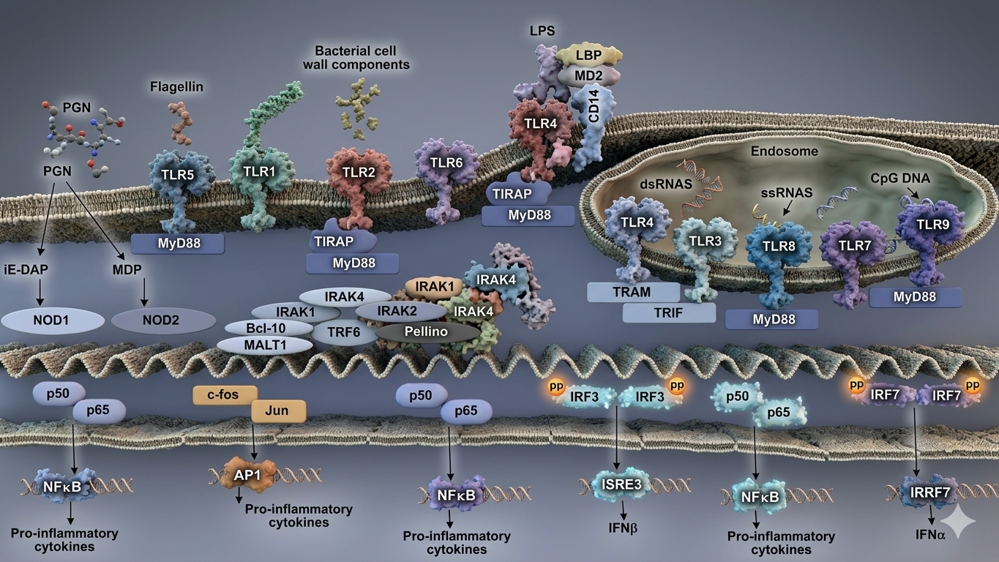

동물실험을 대체하는 차세대 발열성 물질 검출 시험으로,
제약·바이오·혈액제제·세포치료제 제품의 안전성을 과학적으로 검증합니다.
MAT는 Rabbit Pyrogen Test(RPT)의 공식 대체 시험법이며,
내독소(ET) + 비내독소성 발열원(NEP) 동시 검출이 가능한 유일한 in vitro 시험입니다.
ICH Q9(R1) 기반 NEP 품질위험성관리(QRM) 절차(BST-TMG-16)를 통해 원료입고부터 완제품까지 NEP 오염 위험을 체계적으로 관리합니다.
MAT(Monocyte Activation Test)는 인간 말초혈액 단핵구 세포(PBMC) 또는 단핵구 세포주를 이용하여 시료 내 발열성 물질을 검출하는 in vitro 시험입니다.
발열성 물질이 단핵구 표면의 Toll-like receptor(TLR)에 결합하여 세포를 활성화시키면 염증성 사이토카인(IL-6, IL-1β, TNF-α 등)이 분비됩니다. 이를 ELISA 방법으로 정량하여 발열성 물질의 존재 여부와 양을 판정합니다.
기존 토끼 발열성 시험(RPT)의 대체 시험법으로, 동물복지 원칙(3R)을 준수하면서도 내독소(Endotoxin)와 비내독소성 발열원(NEP) 모두를 검출할 수 있는 유일한 in vitro 시험법입니다.
토끼를 사용하는 RPT를 완전 대체, 윤리적 시험 수행
내독소(LPS) + NEP(그람양성균·진균·바이러스 유래) 동시 검출 — LAL 불가
LAL 시험의 False Negative(저내독소 회수율) 문제 근본적 해결
인간 면역세포(PBMC) 사용으로 실제 인체 발열 반응 예측력 우수
IL-6 ELISA로 객관적·재현성 높은 정량 데이터 제공 (RPT는 정성적)
| 항목 | MAT ★ | RPT (토끼) | BET/LAL | rFC |
|---|---|---|---|---|
| 동물사용 | 불필요 | 토끼 | 투구게 혈액 | 불필요 |
| 내독소 검출 | ✓ | ✓ | ✓ | ✓ |
| NEP 검출 | ✓ | ✓ | ✗ 불가 | ✗ 불가 |
| LER 영향 | 낮음 | 없음 | 높음 | 높음 |
| 정량성 | 정량 (ELISA) | 정성적 | 정량 | 정량 |
| 주요 규제 | EP 2.6.30, FDA, ISO 10993 | EP 2.6.8 | EP 2.6.14 | USP <85> |
Florence Seibert(1923)가 발열성 물질이 세균 유래임을 발견하면서 토끼를 이용한 발열성 시험법(RPT)이 도입됩니다. 약 100년간 발열성 물질 검출의 표준 시험법으로 사용되었으며, 주사제를 정맥주사한 후 토끼 3마리의 체온 상승을 측정하는 방법입니다.
Russell & Burch의 "The Principles of Humane Experimental Technique"에서 3R(Replacement, Reduction, Refinement) 원칙이 제창됩니다. MAT 개발의 철학적 토대가 됩니다.
투구게 혈액 기반 LAL 시험이 개발되어 1980년 USP 20판에 수재됩니다. 그러나 내독소만 검출 가능하고 NEP 검출이 불가능하다는 근본적 한계가 있습니다.
Hartung 등 연구팀의 선구적인 연구(1999)를 통해 전혈(whole blood) 기반 MAT 시험이 정립됩니다. 내독소와 NEP를 모두 검출할 수 있는 최초의 in vitro 시험법으로 주목받습니다.
2006년 ECVAM(유럽), 2007년 ICCVAM(미국), 2009년 FDA가 각각 MAT를 공식 인정합니다.
MAT가 유럽약전(EP) 챕터 2.6.30으로 공식 수재됩니다. 2017년 개정판에서는 NEP 양성 대조군 사용이 의무화됩니다.
EP 5.1.13에서는 2026년까지 MAT가 발열성 시험의 기본(default) 방법이 될 것임을 명시하고 있습니다. 한국, 일본, 인도, 중국에서도 MAT 모노그래프 제정을 추진 중입니다.
발열성 물질 시험 패러다임의 역사적 전환점
유럽약전 (European Pharmacopoeia) — RPT 완전 삭제·MAT 의무화
한국약전 (Korean Pharmacopoeia) — 별첨 조항 신설 추진
미국 FDA / USP — 검증된 대체 시험법으로 인정
그람음성균(Gram-negative bacteria) 외막 구성 성분인 LPS. 가장 강력한 발열원으로 미량으로도 심각한 발열 반응을 유발합니다.
그람양성균, 바이러스, 진균 유래의 발열성 물질. LAL 시험으로는 검출 불가능합니다.
그람양성균 유래
기타 유래
내독소(LPS)는 TLR4, 그람양성균 유래 물질(LTA, Peptidoglycan)은 TLR2, 바이러스 dsRNA는 TLR3를 통해 각각 단핵구를 활성화합니다. MAT는 이 다양한 TLR 경로를 모두 커버합니다.
유럽약전 EP 5.1.10은 비경구 의약품 배치 출하 시 NEP의 존재 여부에 대한 리스크 평가를 의무화하며, MAT(2.6.30)가 NEP 존재를 배제하기 위한 적합한 시험법임을 명시하고 있습니다.

MAT(Monocyte Activation Test)가 커버하는 전체 TLR 신호전달 경로 — 내독소(ET) + 비내독소성 발열원(NEP) 동시 검출 근거
| TLR | 주요 Ligand | 유래 (병원체) | 세포 내 위치 | 신호전달 경로 → 사이토카인 | 발열원 유형 | MAT 검출 |
|---|---|---|---|---|---|---|
| TLR1 | 트리아실리포펩타이드 (TLR2와 헤테로다이머 형성) |
그람음성균, 마이코박테리아 | 🔵 세포 표면 | MyD88 → IRAK → TRAF6 → NF-κB → IL-6, TNF-α | NEP | ✓ PBMC |
| TLR2 | LTA, Peptidoglycan, HKSA, Lipoprotein ★ MAT NEP 핵심 표적 |
그람양성균 (Staph., Strep. 등) |
🔵 세포 표면 | MyD88 → NF-κB → IL-6, IL-1β, TNF-α ⚠ LAL로 검출 불가 — MAT 전용 |
NEP | ✓ PBMC |
| TLR3 | dsRNA (이중가닥 RNA) 폴리 I:C 모델 리간드 |
바이러스 (mRNA 치료제 공정 NEP) |
🟠 엔도솜 내부 | TRIF → IRF3/NF-κB → IFN-β, IL-6 ⚠ LAL로 검출 불가 — MAT 전용 |
NEP | ✓ PBMC |
| TLR4 | LPS (Lipopolysaccharide) ★★ MD-2, CD14 보조수용체 필요 |
그람음성균 (E. coli, Salmonella 등) |
🔵 세포 표면 🟠 + 엔도솜 |
MyD88/TRIF 이중경로 → NF-κB + IRF3 → IL-6, TNF-α, IFN-β (강력) ✅ LAL·BET·MAT 모두 검출 |
ET (내독소) | ✓ PBMC/WB |
| TLR5 | Flagellin (편모 단백질) | 편모 보유 세균 (E. coli, Salmonella) |
🔵 세포 표면 | MyD88 → NF-κB → IL-6, TNF-α ⚠ LAL로 검출 불가 — MAT 전용 |
NEP | ✓ PBMC |
| TLR6 | 디아실리포펩타이드 (TLR2와 헤테로다이머 형성) |
마이코플라즈마, 그람양성균 | 🔵 세포 표면 | MyD88 → NF-κB → IL-6, TNF-α ⚠ LAL로 검출 불가 — MAT 전용 |
NEP | ✓ PBMC |
| TLR7/8 | ssRNA (단일가닥 RNA) R848, imidazoquinolines |
바이러스 (RNA 바이러스, mRNA 제제 NEP) |
🟠 엔도솜 내부 | MyD88 → IRF7/NF-κB → IL-6, IFN-α, TNF-α ⚠ LAL로 검출 불가 — MAT 전용 |
NEP | ✓ PBMC |
| TLR9 | CpG DNA (비메틸화) 세균·바이러스 유래 DNA |
세균, DNA 바이러스 (CGT 공정 오염) |
🟠 엔도솜 내부 | MyD88 → IRF7/NF-κB → IL-6, IFN-α ⚠ LAL로 검출 불가 — MAT 전용 |
NEP | ✓ PBMC |
말초혈액 단핵구 세포 (Peripheral Blood Mononuclear Cells)
Biostream 표준 방법
4명 이상 공여자 풀링 PBMC 사용, 검증된 재현성 보장
인간 전혈 직접 사용
단핵구 세포주 (Monocytic Cell Line)
⚠ EP 2.6.30 기준, THP-1과 같은 특정 세포주는 NEP 검출에 제한적이라 명시되어 있습니다.
PFW로 희석. 양성/음성/NEP 대조군 준비
96-well plate에 PBMC 분주 후 시료 혼합. 37°C, 5% CO₂
단핵구 TLR이 발열원 인식 → 사이토카인(IL-6) 분비. 배양 상청액 수집
IL-6 ELISA로 사이토카인 농도 정량 → 기준치 대비 적합/부적합 판정
EP 2.6.30 / USP <1225> 기준
시험법 자체의 성능 특성(performance characteristics)을 확립합니다. PBMC 또는 전혈 기반 방법의 과학적 타당성을 입증하는 단계입니다.
① 특이성 (Specificity)
내독소(LPS), NEP(LTA, Peptidoglycan, β-glucan 등) 각각에 대한 양성 반응 확인
② 직선성 (Linearity)
LPS 표준물질의 농도-반응 관계 확인 (log-log 표준곡선, R² ≥ 0.98)
③ 감도 (Sensitivity / LoD)
검출 하한(Limit of Detection) 설정. 일반적으로 0.01~0.1 EU/mL 수준
④ 재현성 (Repeatability / Reproducibility)
Intra-assay (동일 실험 내, n≥3) 및 Inter-assay (다른 날/공여자, n≥3) CV% 확인
⑤ 공여자 선별 (Donor Qualification)
LPS 및 NEP 대조군에 대한 반응성 확인. 반응 불량 공여자 제외 기준 설정
EP 2.6.30 배치 출하 필수 요건
특정 제품(시료)이 MAT 시험에 적합한지 확인하는 절차입니다. 시료 매트릭스의 간섭, 세포 독성 유무를 검증합니다.
① 세포 독성 시험 (Cytotoxicity Test)
시료 농도 범위에서 PBMC 생존율 확인. 세포 독성 농도 초과 시료 제외. MTT assay 또는 세포 형태학적 평가 활용.
② 간섭 시험 (Interference Test)
시료 + LPS 스파이크(spike) 처리군의 회수율 확인 (기준: 50~200% 회수). Matrix effect 및 LER 유사 현상 평가.
③ NEP 간섭 확인
시료 + NEP 대조군 스파이크 처리군의 회수율 확인. 시료가 NEP 검출을 억제하거나 과도하게 증폭하지 않는지 확인.
④ 적합 희석 배수 결정 (MVC 설정)
Maximum Valid Concentration(MVC) 설정. 세포 독성 없고 간섭 없는 최대 시료 농도 결정.
⑤ 배치 간 재현성 확인
복수 배치(최소 3배치)에 대한 시험 결과 일관성 확인. EP: BET와 MAT 비교 데이터 필요.
| 검증 항목 | 시험법 | 수락 기준 | 판정 결과 |
|---|---|---|---|
| 세포 독성 | 생존율 평가 (MTT/형태학) | 시료 처리군 생존율 ≥ 70% | Pass → 해당 농도 사용 가능 |
| LPS 간섭 (회수율) | LPS Spike Recovery | 회수율 50~200% | Pass → 해당 희석배수 적합 |
| NEP 간섭 (회수율) | NEP Spike Recovery (LTA 등) | 회수율 50~200% | Pass → NEP 검출 가능 |
| 표준곡선 적합성 | IL-6 표준곡선 (4-PL fit) | R² ≥ 0.98, CV ≤ 20% | Pass → 시험 유효 |
| 양성 대조군 (LPS) | LPS 0.1 EU/mL | IL-6 ≥ 기준치 | Pass → 내독소 감도 확인 |
| NEP 양성 대조군 | HKSA 또는 LTA | IL-6 ≥ 기준치 | Pass → NEP 감도 확인 |
| 음성 대조군 | PFW (발열원 불검출수) | IL-6 < 기준치 | Pass → 배경 오염 없음 |
시료 접수
시료 정보 확인
세포 독성 시험
MVC 범위 설정
간섭 시험
LPS + NEP Spike
판정
50~200% 회수율?
PSV 완료
배치 출하 시험 가능
* 간섭 발생 시: 희석배수 증가, 전처리(희석·희석 후 스파이크·투석 등) 후 재검증
혈액 유래 제품은 복잡한 생물학적 매트릭스와 다양한 NEP 오염원으로 인해 MAT 적용이 특히 중요합니다. LAL 간섭(LER) 발생 빈도도 높습니다.
⚠ LER 간섭 주의
혈장 성분(citrate, 단백질)에 의한 LAL 간섭이 심각하여 BET만으로는 신뢰성 있는 결과를 보장할 수 없습니다. MAT 병행 또는 대체 권장.
세포치료제는 복잡한 생물학적 매트릭스, 다양한 배지 성분, 그리고 살아있는 세포 자체가 발열 반응을 일으킬 수 있어 NEP 리스크가 매우 높습니다.
📌 세포치료제 특이 고려사항
살아있는 세포가 IL-6를 자체 분비할 수 있어 시험 설계 시 세포 독성 평가 및 블랭크 보정이 필수적입니다.
항원, 보조제(adjuvant), 바이러스 벡터 등 복잡한 생물학적 성분. NEP 오염 및 성분 자체에 의한 사이토카인 자극 위험 높음.
Material-Mediated Pyrogen(MMP) 검출. 기기 소재에서 용출되는 발열성 물질은 LAL로 검출 불가. ISO 10993 기준.
생물학적 제제 특유의 복잡한 매트릭스. 그람양성균 공정 오염, LER 간섭 위험. NEP QRM 결과에 따라 MAT 적용 결정.
LAL(BET) 시험에서 저내독소 회수율(LER) 현상이 발생하는 제품. BET 단독 시 False Negative 위험으로 MAT 병행 강력 권장.
주사제, 수액제, 점안제 등 비경구 투여 의약품 및 주사용 API. NEP 위험도 QRM 평가 후 시험전략 결정.
Biostream은 ICH Q9(R1) 기반의 NEP 품질위험성관리 절차(BST-TMG-16)를 통해 원료 입고부터 완제품 출하까지 전 공정에서 NEP 오염 위험을 체계적으로 관리합니다.
▲ ICH Q9(R1) 기반 Biostream NEP 품질위험성관리(QRM) 프로세스 — 원료 입고부터 완제품 출하까지 전 구간 적용
심각도(S), 발생도(O), 검출성(D) 값을 입력하면 RPN과 시험전략이 자동으로 산출됩니다.
환자·제품에 미치는 영향
위해요소 발생 가능성
높을수록 검출 어려움
📋 제품군별 기본 설정 (예시)
* 실제 RPN 점수는 제품별 QRM 평가 데이터를 기반으로 Biostream 전문가와 함께 산정합니다.
고객 제약제조 회사의 원료입고부터 제조/충전공정을 거쳐 최종 완제품 전 구간에서 NEP 오염 가능성을 체계적으로 식별, 분석, 평가, 통제하고 지속적 검토 체계를 수립합니다. NEP 위험수준에 따라 BET 단독, MAT 보완/주기적, 개발단계 확인 등의 시험 전략을 합리적으로 결정하는 근거를 제공합니다.
착수 (Initiation)
범위, 위험질문 확정, 팀 구성, 데이터 요구사항 정의
위해요소 식별 (Hazard Identification)
NEP 잠재원 목록화 — 원료/공정/환경/포장 3개 구획
위험분석 (Risk Analysis)
FMEA: 심각도(S) × 발생도(O) × 검출성(D) = RPN 산출
위험평가 (Risk Evaluation)
수용기준과 비교 — 허용가능/조건부/불가 분류
위험통제 (Risk Control)
예방/탐지/저감 조치 및 BET·MAT 시험전략 결정
위험재검토 (Risk Review)
공급자 변경, 공정변경, 환경 일탈 등 트리거 기반 재평가
현재 BET만으로 제품 출시에 충분한가?
NEP 위험으로 인해 MAT 또는 대체 발열시험이 요구되는지 판단
어떤 원료가 NEP 유입의 주요 기여 인자인가?
주성분, 배지, 혈청, 보조제, 1차 포장자재 중 고위험 항목 식별
NEP 생성/도입 가능성이 가장 높은 공정 단계는?
세포배양, 수확, 정제, 충전 등 공정별 NEP 위험도 순위화
현재 통제가 NEP 위험을 허용범위 이내로 낮추는가?
공급자 자격화, 여과/살균, 세척, 환경모니터링 효과 평가
어떤 이벤트가 NEP 재평가 트리거가 되는가?
공급자 변경, 공정변경, 환경 일탈, 발열 불만, 규제 업데이트
| 등급 | 환자 영향 |
|---|---|
| S5 | 생명위협, IV 고위험군 발열사건 |
| S4 | 입원/의료개입 필요, 다수 배치 거부 |
| S3 | 경증 부작용/해열제 필요, 배치 재시험 |
| S2 | 임상적 무시가능, 사양일탈 |
| S1 | 영향 없음 |
| 등급 | 발생 빈도 |
|---|---|
| O5 | 자주 / 연 1회 이상 |
| O4 | 드물게 / 5년 내 다회 |
| O3 | 가능성 있음 / 이력 제한적 |
| O2 | 낮음 / 강한 통제, 과거 없음 |
| O1 | 매우 드묾 / 이론적 수준 |
| 등급 | 검출 능력 |
|---|---|
| D5 | 검출 거의 불가 / 시험 미실시 |
| D4 | 제한적 / BET만, NEP 미포함 |
| D3 | 일부 검출 / 간헐 MAT |
| D2 | 양호 / 정기 MAT |
| D1 | 매우 양호 / 실시간 모니터 |
RPN = S × O × D (최대 125)
즉시 저감/통제 필요
MAT 시험 개발 또는 배치별 수행. 고위험 원료(동물혈청, 복합 배지) 입고 시 초기 배치 MAT 스크리닝.
목표 실행기간: 3개월
조치계획 및 모니터링 강화
개발단계 MAT 또는 주기적 확인. 공정중간물 샘플 MAT로 NEP 제거단계 효율 확인.
목표 실행기간: 6개월
현행 통제 유지
BET 유지, 변화 시 재평가. 연간 정기 검토 (PQR 연계).
연간 재검토
| 구획 | 세부 항목 | 잠재 NEP 유형 | 기존 통제 | 초기 위험(S/O) | 시험전략 |
|---|---|---|---|---|---|
| 원료/주성분 | 세포배양 배지 (복합성분) | Peptidoglycan, LTA, β-glucan | 공급자 감사, 수입검사 | 4/3 | MAT 스크리닝 |
| 원료/혈청 | 동물혈청/혈청 단백질 | 다양한 외래 발열물질 | 바이러스 안전성 자료, 처리공정 | 4/4 | 매로트 MAT |
| 혈액제제 원료 | 혈장, 혈청, 혈소판 | 그람양성균 유래 NEP, LER 위험 | 바이러스 불활화, 분획 공정 | 5/3 | BET+MAT 병행 |
| 세포치료제 원료 | 배지, 성장인자, 바이러스벡터 | 바이러스 dsRNA, 배지 NEP | 무균여과, 바이럴 클리어런스 | 5/3 | 개발단계 MAT 필수 |
| 1차 포장 | 고무마개, 실리콘오일 | 추출발열성, 미생물 잔류 | 멸균, 세척 | 2/2 | E&L 후 필요시 MAT |
| 제조공정 | 세포배양 (Grade C) | 배지 오염, 세포사멸 부산물 | 배지 필터, 배양 모니터 | 4/3 | 공정맵 MAT |
| 충전공정 | 무균충전 (Grade A/B) | 인적요인, 피부미생물 성분 | Media Fill, EM | 5/2 | EM Alert시 MAT Pool |
| 완제품 | 장기보관 분해물 | 면역자극 분해산물 | 안정성 시험, 보관조건 통제 | 3/2 | 안정성 시험 NEP 포함 |
| 조건 / 제품 유형 | BET (LAL) | MAT | RPT | 비고 |
|---|---|---|---|---|
| NEP 위험 저 (RPN <40) | ✓ 적용 | – | – | BET 유지, 변화 시 재평가 |
| NEP 위험 불확실 | ✓ 적용 | 조건부 (개발/초기) | – | 초기 검증 후 전략 결정 |
| NEP 위험 중~고 (RPN ≥40) | ✓ 적용 | ✓ 적용 (병행) | – | BET+MAT 병행 또는 주기적 MAT |
| 혈액제제 / 혈장분획 | ✓ 적용 | ✓ 필수 (LER 위험) | – | LER로 BET 단독 신뢰 불가 |
| 세포·유전자치료제 | ✓ 적용 | ✓ 필수 (NEP 고위험) | – | 개발단계 필수, 상용화 비교 시험 |
| 의료기기 (MMP) | 옵션 | ✓ 권장 (ISO 10993) | – | 직접접촉 또는 용출액 방법 |
| 규제 RPT 요구 시 | ✓ 적용 | 옵션 (PSV 후) | ✓ 요구 | EP PSV 완료 후 MAT 대체 가능 |
* QRM 결과에 따른 시험전략은 제품 유형, 공정 특성, 규제 요건에 따라 Biostream 전문가와 사전 협의 후 결정합니다.
EP 2.6.30 — MAT 공식 수재 (2010년)
제품별 검증(PSV) 후 RPT 완전 대체 가능. NEP 양성 대조군 사용 의무(2017년 개정).
EP 2.6.8 — RPT 대체 권고
PSV 완료 후 MAT로 대체하여야 한다고 명시. 2019년부터 유럽 배포 제조사에 의무 시행.
EP 5.1.10 — NEP 리스크 평가 의무화
배치 출하 시 NEP 존재 여부 리스크 평가 의무화. MAT(2.6.30)를 NEP 평가 방법으로 명시.
🎯 EP 5.1.13 — 2026년 MAT 기본 방법화 예정
유럽약전은 2026년까지 MAT를 발열성 시험의 default 방법으로 전환할 계획을 명시.
FDA Guidance (2012) — MAT 인정
의약품, 바이오제품, 의료기기에서 제품별 검증(PSV) 제공 시 MAT 사용 가능.
FDA CDRH — 의료기기 MAT 인정
2016년 CDRH 가이던스: RPT에 동등한 검증된 방법 수용. MAT MDDT 프로그램 등재 중.
USP <151> Pyrogen Test
검증된 동등한 in vitro 시험으로 대체 가능하다고 명시. 단, USP <1225> 기준 full validation 필요.
ISO 10993-1:2018 — 의료기기 생물학적 평가
동등한 관련 정보를 제공하는 경우 in vitro 모델을 in vivo보다 우선 사용 권장. MAT 적용 근거 제공.
ISO 10993-11 — 전신 독성
의료기기 발열성 시험 요건 규정. MAT 언급 및 적용 근거 포함.
🇰🇷 한국 식품의약품안전처 (MFDS)
3R 원칙 기반 동물대체시험법 도입 정책 추진 중. MAT 도입을 위한 기술 검토 및 가이드라인 개발 진행 중. 허가 시 MAT 데이터 제출 시 사전 협의 권장.
🌏 일본·인도·중국
JP, 인도, 중국 등 주요 국가에서 MAT 모노그래프 제정을 위한 연구 및 논의가 활발히 진행 중입니다.
ECVAM / ICCVAM 인정
유럽 ECVAM(2006) 및 미국 ICCVAM(2007)의 공식 MAT 인정으로 국제적 과학 신뢰성 확보.
| 규제 기관 | 관련 조항 | MAT 지위 | Validation 요건 |
|---|---|---|---|
| 유럽약전 (EP) | EP 2.6.30, 2.6.8, 5.1.10, 5.1.13 | 공식 수재 / 의무화 | PSV만 필요 |
| FDA (미국) | FDA Guidance 2012, CDRH 2016 | 대체법으로 수용 | PSV + 사례별 검토 |
| USP (미국약전) | USP <151> | 대체법 (챕터 미수재) | USP <1225> + PSV |
| ISO | ISO 10993-1, 10993-11 | in vitro 우선 권장 | PSV 및 동등성 입증 |
| 한국 MFDS | 동물대체시험법 정책 | 도입 검토 중 | 사전 협의 권장 |
시험 목적, 시료 특성, 적용 규제 확인. NEP 위험 수준 사전 검토(QRM)를 통해 BET 단독 또는 MAT 병행 전략 결정.
의뢰서 작성, Study Protocol 작성 및 검토, NDA 체결.
예상 소요: 1~2일시료 외관 및 표기 확인, 보관 조건 점검, 시험 등록 및 고유번호 부여.
예상 소요: 1일세포 독성 시험, 간섭 시험(LPS/NEP Spike) → PSV 완료 후 의약품등 시험·검사 인증기관 기준 MAT 시험 수행 (PBMC co-incubation 16~24h, ELISA).
예상 소요: 3주사이토카인 농도 산출, 시험 적합성 기준 검토, QA 검토 및 승인.
예상 소요: 2~3일의약품등 시험·검사 인증기관 기준 공식 시험 보고서 발행. 원자료(Raw data) 및 규제 제출용 보고서 형식 지원.
예상 소요: 2~3일* 긴급 의뢰의 경우 별도 문의 바랍니다.
고감도 마이크로플레이트 리더로 IL-6 등 사이토카인 정량 분석.
37°C ± 0.5°C, 5% CO₂ 정밀 제어. 온·습도 실시간 모니터링.
Class II 생물안전작업대. HEPA 필터 장착으로 무균 조작 보장.
건강한 공여자 풀링 PBMC 보관 및 관리. 냉동 보존 PBMC 품질 검증.
시험 책임자(SD) 및 QA 독립 운영. 전 과정 SOP 기준 수행.
-80°C 초저온냉동고, -20°C 냉동고, 냉장(2~8°C). 온도 이력 관리.
식품의약품안전처 인증
EP 2.6.30 준수
본 페이지에 사용된 주요 약어의 영문 전체명과 한국어 설명을 정리하였습니다.
* 본 약어집은 EP 2.6.30, ICH Q9(R1), ISO 10993 등 최신 규제 문서 기준으로 작성되었습니다.
NEP 종류별 특성, 검출 전략, 최신 규제 동향
EP 2.6.30 기반 PSV 가이드라인 및 실무 데이터
BST-TMG-16 기반 NEP 품질위험관리 전체 문서
📋 가입 승인 안내
신청서 접수 후 영업일 1~2일 내에 담당자가 검토 후 비밀번호를 이메일로 전달드립니다.